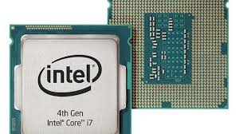

Máquina electrónica capaz de almacenar información y tratarla automáticamente mediante operaciones matemáticas y lógicas controladas por programas informáticos.
Teclado
En informática, un teclado es un dispositivo o periférico de entrada, en parte inspirado en el teclado de las máquinas de escribir, que utiliza un sistema de botones o teclas, para que actúen como palancas mecánicas o interruptores electrónicos que envían toda la información a la computadora o al teléfono móvil.

CPU
Sigla de la expresión inglesa central processing unit, 'unidad central de proceso', que es la parte de una computadora en la que se encuentran los elementos que sirven para procesar datos
Memoria Ram
Sigla de Random Access Memory (‘memoria de acceso aleatorio’), memoria principal de la computadora, donde residen programas y datos, sobre la que se pueden efectuar operaciones de lectura y escritura.